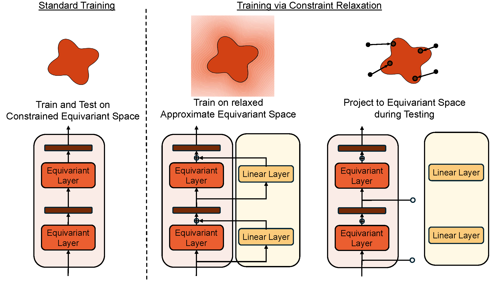
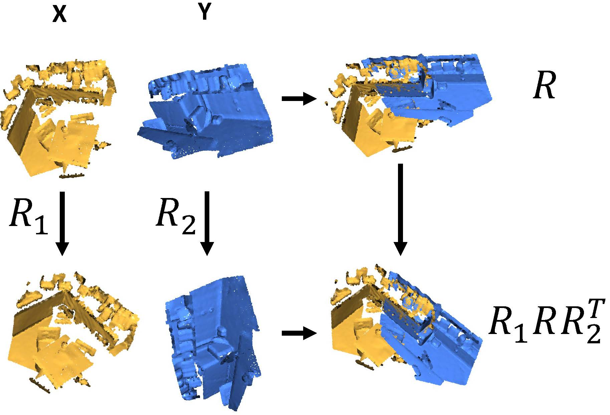
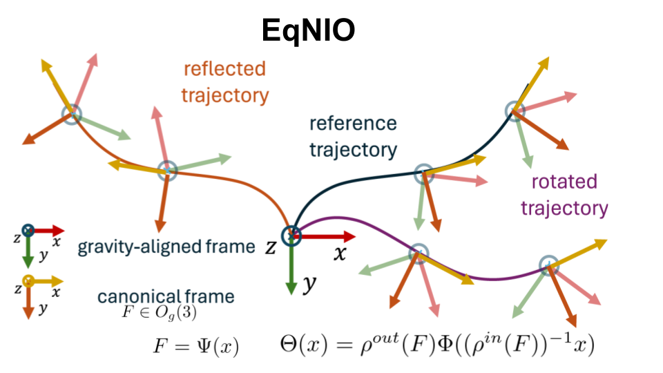
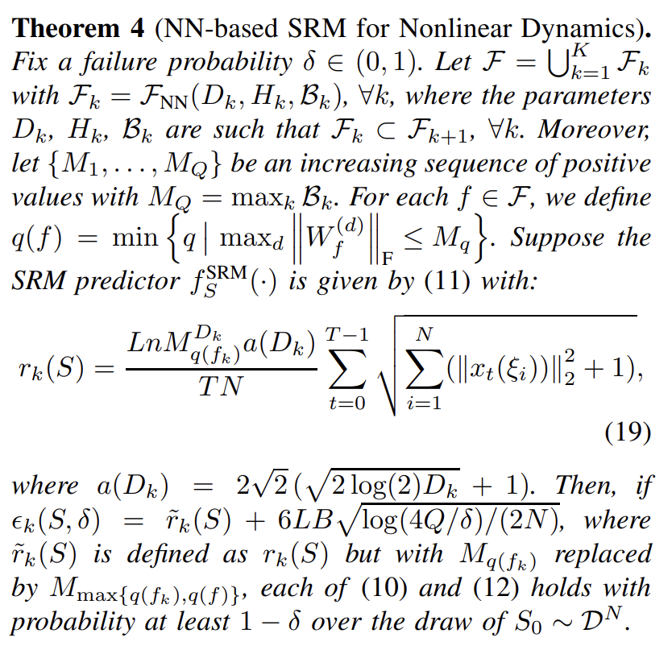
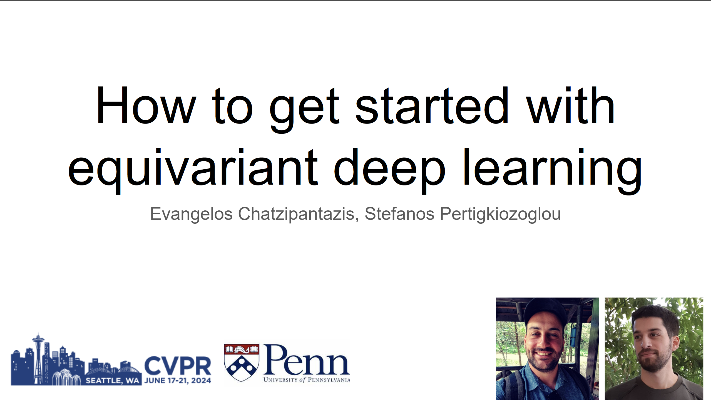
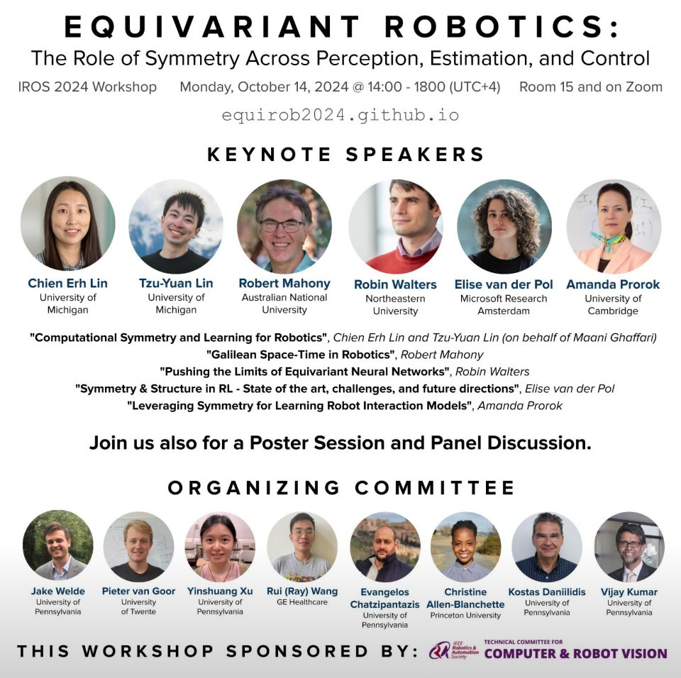

|
Evangelos Chatzipantazis Hello visitor! I am Evangelos. My name stems from the Greek Ev (< εύ) + angelos (< ἄγγελος) which translates to "the messenger of good news". So yes; if you are looking for good news you are in the right place. I hold a Master of Science in Robotics from UPenn and a Master of Science in Statistics and Data Science from Wharton. Prior to that, I completed my undergraduate studies in the field of Electrical Engineering and Computer Science at the National Technical University of Athens, under the supervision of Prof. Petros Maragos, where I conducted research on spectral methods for image segmentation. |

|
Research
My current research focus lies on Equivariant Deep Learning for 3D Computer Vision and Robotics.
More broadly, I am interested in problems that fuse geometry, statistics and physics especially in the form of inductive biases on deep neural networks.
I am also very interested in the use of Artificial Intelligence for Science. |
|

|
Improving Equivariant Model Training via Constraint Relaxation
Stefanos Pertigkiozoglou*, Evangelos Chatzipantazis*, Shubhendu Trivedi, Kostas Daniilidis, Advances in Neural Information Processing Systems (NeurIPS), 2024, pdf Introduced a novel method for improving the training of Equivariant Neural Networks. Specifically, we showcased how relaxing the equivariant constraint during training and projecting back to the space of equivariant models during inference can improve the overall optimization |
|

|
BiEquiFormer: Bi-Equivariant Representations for Global Point Cloud Registration
Stefanos Pertigkiozoglou*, Evangelos Chatzipantazis*, Kostas Daniilidis, Symmetry and Geometry in Neural Representations Workshop (NeurReps), 2024, pdf Proposed a novel point cloud registration method that utilizes bi-equivariant representations to achieve robust point cloud alignment, that is independent of the initial poses of the input point clouds. |
|

|
EqNIO: Subequivariant Neural Inertial Odometry
Royina Karegoudra Jayanth*, Yinshuang Xu*, Ziyun Wang, Evangelos Chatzipantazis, Daniel Gehrig, Kostas Daniilidis Under Review, 2024 arXiv / slides Neural networks are seeing rapid adoption in purely inertial odometry, where accelerometer and gyroscope measurements from commodity inertial measurement units (IMU) are used to regress displacements and associated uncertainties. They can learn informative displacement priors, which can be directly fused with the raw data with off-the-shelf non-linear filters. Nevertheless, these networks do not consider the physical roto-reflective symmetries inherent in IMU data, leading to the need to memorize the same priors for every possible motion direction, which hinders generalization. In this work, we characterize these symmetries and show that the IMU data and the resulting displacement and covariance transform equivariantly, when rotated around the gravity vector and reflected with respect to arbitrary planes parallel to gravity. We design a neural network that respects these symmetries by design through equivariant processing in three steps: First, it estimates an equivariant gravity-aligned frame from equivariant vectors and invariant scalars derived from IMU data, leveraging expressive linear and non-linear layers tailored to commute with the underlying symmetry transformation. We then map the IMU data into this frame, thereby achieving an invariant canonicalization that can be directly used with off-the-shelf inertial odometry networks. Finally, we map these network outputs back into the original frame, thereby obtaining equivariant covariances and displacements. We demonstrate the generality of our framework by applying it to the filter-based approach based on TLIO, and the end-to-end RONIN architecture, and show better performance on the TLIO, Aria, RIDI and OxIOD datasets than existing methods. |
|

|
Structural Risk Minimization for Learning Nonlinear Dynamics
Charis Stamouli, Evangelos Chatzipantazis, George Pappas American Control Conference ACC, 2024 (Best Student Paper Award) arXiv / proceedings / slides Recent advances in learning or identification of nonlinear dynamics focus on learning a suitable model within a pre-specified model class. However, a key difficulty that remains is the choice of the model class from which the dynamics will be learned. The fundamental challenge is trading the richness of the model class with the learnability within the model class. Toward addressing the so-called model selection problem, we introduce a novel notion of Structural Risk Minimization (SRM) for learning nonlinear dynamics. Inspired by classical SRM for classification, we minimize a bound on the true prediction error over hierarchies of model classes. The class selected by our SRM scheme is shown to achieve a nearly optimal learning guarantee among all model classes contained in the hierarchy. Employing the proposed scheme along with computable model class complexity bounds, we derive explicit SRM schemes for learning nonlinear dynamics under hierarchies of: i) norm-constrained Reproducing Kernel Hilbert Spaces, and ii) norm-constrained Neural Network classes. We empirically show that even though too loose to be used as absolute estimates, our SRM bounds on the true prediction error are able to track its relative behavior across different model classes of the hierarchy. |

|
SE(3)-Equivariant Attention Networks for Shape Reconstruction in Function Space
Evangelos Chatzipantazis*, Stefanos Pertigkiozoglou*, Edgar Dobriban, Kostas Daniilidis The Eleventh International Conference on Learning Representations ICLR, 2023 project page / slides / arXiv / openreview Local shape modeling and SE(3)-equivariance are strong inductive biases to reconstruct scenes of arbitrarily many objects appearing in random poses even when a network is trained on single objects in canonical pose. |

|
Learning Augmentation Distributions using Transformed Risk Minimization
Evangelos Chatzipantazis*, Stefanos Pertigkiozoglou*, Kostas Daniilidis, Edgar Dobriban, Transactions on Machine Learning Research TMLR, 2023 arXiv / openreview We propose a new Transformed Risk Minimization (TRM) framework as an extension of classical risk minimization. Our TRM method (1) jointly learns transformations and models in a single training loop, (2) works with any training algorithm applicable to standard risk minimization, and (3) handles any transforms, such as discrete and continuous classes of augmentations. To avoid overfitting when implementing empirical transformed risk minimization, we propose a novel regularizer based on PAC-Bayes theory. We propose a new parametrization of the space of augmentations via a stochastic composition of blocks of geometric transforms. The performance compares favorably to prior methods on CIFAR10/100. Additionally, we show empirically that we can correctly learn certain symmetries in the data distribution (recovering rotations on rotated MNIST) and can also improve calibration of the learned model. |

Graph Neural Networks for Multi-Robot Active Information Acquisition
|
Mariliza Tzes, Nikolaos Bousias, Evangelos Chatzipantazis, George J. Pappas IEEE International Conference on Robotics and Automation, ICRA, 2023 (Outstanding Paper Award in Multi-Robot Systems) project page / video / paper / arxiv We propose the Information-aware Graph Block Network (I-GBNet), an Active Information Acquisition adaptation of Graph Neural Networks, that aggregates information over the graph representation and provides sequential-decision making in a distributed manner. Numerical simulations on significantly larger graphs and dimensionality of the hidden state and more complex environments than those seen in training validate the properties of the proposed architecture and its efficacy in the application of localization and tracking of dynamic targets. |
Talks |
|

|
Invited Speaker in CVPR 2024 workshop on Equivariant Vision: From Theory to Practice.
Tutorial: ”How to get started with equivariant deep learning” |
Organizer |
|

|
Organizer in IROS 2024 Workshop:
Equivariant Robotics: The Role of Symmetry Across Perception, Estimation, and Control. |
TeachingI am very passionate about teaching. Both from the mentoring perspective and as a means to convey knowledge in a clear, concise manner. I am a big fan of Richard Feynman's teaching techniques. |

|
Teaching Assistant, ESE546 Principles of Deep Learning Fall 2019, 2020
Class Notes (Co-authored with Prof.Pratik Chaudhari) |

|
Teaching Assistant, CIS680 Advanced Machine Perception, Fall 2019
Website (under Prof. Jianbo Shi) |
| Teaching Assistant, ESE650 Learning in Robotics, Spring 2019 under Prof. Kostas Daniilidis. |
|
Credits for the template Jon Barron |